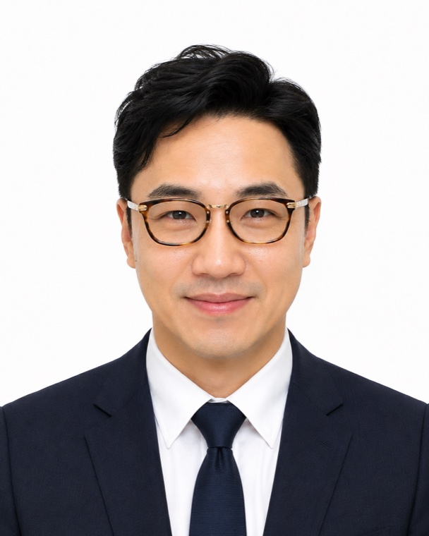

Audiologist
Lee Seong-haeng CEO
- Audiologist certified by the Korean Society of Otorhinolaryngology-Head and Neck Surgery (대한이비인후과학회)
- Full member, American Speech-Language-Hearing Association
- Completed audiologist member training, Korean Audiological Society
- Completed audiologist course, Korean Society of Otorhinolaryngology
- Graduate, Blue Mountain Academy, USA
- Graduate, AIU University, Atlanta, GA
- Completed Bachelor of Business coursework, Cornell
- Completed “The Life of Christ,” Salvation Army
- Completed “GOD IS THERE,” EMMAUS School
- Member, Korea–Russia Olympic Organizing Committee
- Head of Seoul Special Advisory Group, 2023 Election General Headquarters